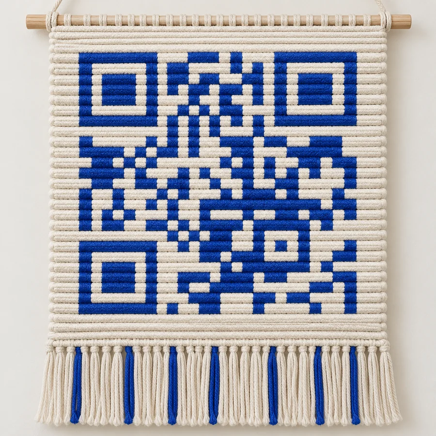

Um varal de coisas sentidas
Entre o sal
e a palavra.
O mar, a terra, a gente.
Fotografias que guardam instantes.
Versos que não deixam passar.
é um jeito de chegar.
Tem um pouco
de mundo
em cada verso.
Uma jangada voltando. O céu que muda de cor. Uma flor aberta, uma risada, um encontro. Nas fotopoesias de Marcello Tubarão, o extraordinário mora perto.
Este varal aproxima a beira do mar, a terra e os afetos. A fotografia encontra a palavra; o cordel encontra a tela. E um fio de macramê costura a passagem entre o que a mão toca e o que o olhar descobre.
Conheça essa trama02 — O VARAL
Pendurados
na memória.
Cada fotografia, um pequeno mundo.
Toque para ampliar e ler os versos.
Fotografias inteiras. Versos no seu lugar. Um tempo só seu.
UMA PAUSA PARA ESCUTAR
Feche os olhos.
O lugar continua.
Um sopro de vento. O vai e vem das ondas.
Escolha uma paisagem para acompanhar a visita.
O som só começa quando você quiser.
Paisagens sonoras criadas digitalmente.
03 — A TRAMA
Um fio puxa
outro mundo.
Na peça, o nó. Na fotografia, o instante. No cordel, a palavra. O macramê é o começo deste caminho: um convite feito à mão para entrar e demorar um pouco.
O QR code na peça física abre esta exposição. Assim, os fios seguem pela tela e chegam a outras paisagens.

A trama azul ao lado é uma referência artística. Para acessar o site ou produzir a peça, use o QR code acima.
“Que essa luz lhe dê força
enchendo seu coração”
Marcello Tubarão ·